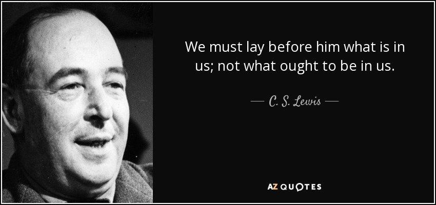

- The Gamgee Conversations -
- The Gamgee Conversations -
. . . . . . . . . . . . . . . . . . . . . . . . .
This Week's Conversation:
. . . . . . . . . . . . . . . . . . . . . . . . .

. . . . . . . . . . . . . . . . . . .
"There are only two types of people in the end:
those who say to God 'Thy will be done,' and those to whom God says,
in the end, 'Thy will be done.'"
-The Great Divorce